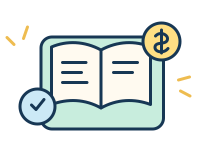
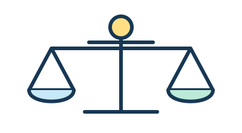

MM 理論：價值會改變嗎？
理想假設
無稅・無違約風險
無代理成本等→改變借款比例
股東承擔的
風險也會變→公司價值
在假設下
不受組合影響
無稅・無違約風險
無代理成本等→改變借款比例
股東承擔的
風險也會變→公司價值
在假設下
不受組合影響
判斷線索：題目出現理想市場、無稅等假設。

借錢有稅務好處，卻也帶來還款壓力。跟著這份講義，從融資選擇一路看到如何比較不同的負債比例。
根據你提供的 44 頁教材整理核心觀念，非完整逐頁講解；例子及練習為自編，案例為歷史資料。
整理自原教材 PDF 第 2、4–10、14、38、41 頁。
向銀行借款或發行債券，通常必須依約支付利息及本金。
關鍵：有固定的付款承諾。
由股東出資，股東在償付債權人的債務後，對剩餘利益有請求權。
關鍵：分享所有權，也承擔剩餘風險。
想像開一家咖啡店：銀行貸款要還本付息；找合夥人出資不必像貸款一樣約定還本，但要分享所有權。（自編例子）
例如：負債 40 萬、權益 60 萬，負債比率是 40%。此處負債主要指有息負債及符合債務性質的承諾，並非所有會計負債；要確認使用帳面價值或市場價值，D/E（負債除權益）也不是同一個比率。
原教材 PDF 第 2–4 頁。
假設總資本固定為 100 萬元；拖動滑桿，看看負債與權益的金額。這只是資金組合示範，不能判斷最佳比例。

利息稅盾：符合條件的利息費用可能減少應稅所得。
管理紀律：固定還款可能讓管理者更審慎使用資金。
財務困難：現金流不足時，還款壓力與相關成本上升。
代理成本與彈性：股東與債權人利益可能衝突；借太多也可能壓縮未來借款空間。
例：利息 10 萬、稅率 20%，在利息全額可扣除且有足夠應稅所得等假設下，稅盾是 2 萬。實際金額仍須考慮適用稅法與公司情況。
原教材 PDF 第 5–9、22 頁；例子為自編。
判斷線索：題目出現理想市場、無稅等假設。
判斷線索：題目問公司偏好的資金來源順序。
原教材 PDF 第 11–12 頁；圖解與提示為自行整理。
不同資金來源各有成本。WACC 把權益成本和稅後負債成本，按市場價值占比加權。
E：權益市值；D：負債市值；Re：權益成本；Rd：稅前負債成本；T：適用稅率。此式假設利息稅盾可依稅率實現。
原教材指出：在預期現金流保持不變等假設下，較低的 WACC 對應較高的公司價值。但增加負債時，權益成本與借款成本也可能上升，不能只把低成本債務比例無限提高。
原教材 PDF 第 14–15、18 頁。
比較不同負債比例的 WACC。在現金流固定的假設下，找出資金成本較低的組合。
留意：營業收入、信用評等與成本假設會改變結果。
將財務困難對營運的影響納入，考慮客戶及供應商可能的反應。
留意：這些影響需要另外估算。
原教材 PDF 第 14、32 頁。
無負債公司價值，加上稅盾現值，再減去預期財務困難成本的現值。
比較相似企業的比例，並考慮企業成長階段、現金流和資金需求。
同業平均與歷史案例只是參考，不代表現在的最佳比例；不同方法及假設可能得到不同答案。
原教材 PDF 第 14、38、41、44 頁。
把負債和權益加在一起，看其中有多少是向債權人籌來的。
負債 40、權益 60：負債比率＝40 ÷ 100＝40%；D／E 則是 40 ÷ 60 ≈ 66.7%。
來源：原教材 PDF 第 4 頁；數字例子自編。
符合條件的利息可以減少應稅所得，進而降低所得稅。
利息 10 萬、稅率 20%，若可全額扣除且所得足夠，稅盾＝2 萬。
來源：原教材 PDF 第 5、22 頁；數字例子自編。
WACC 是各種資金成本依市場價值占比計算的加權平均。
權益 60% × 10% ＋ 負債 40% × 稅後成本 5% ＝ 8%。
來源：原教材 PDF 第 15 頁；數字例子自編。
選一個答案，看看解析。題目為自編。
選一個答案，看看解析。題目為自編。
選一個答案，看看解析。題目為自編。
選一個答案，看看解析。題目為自編。